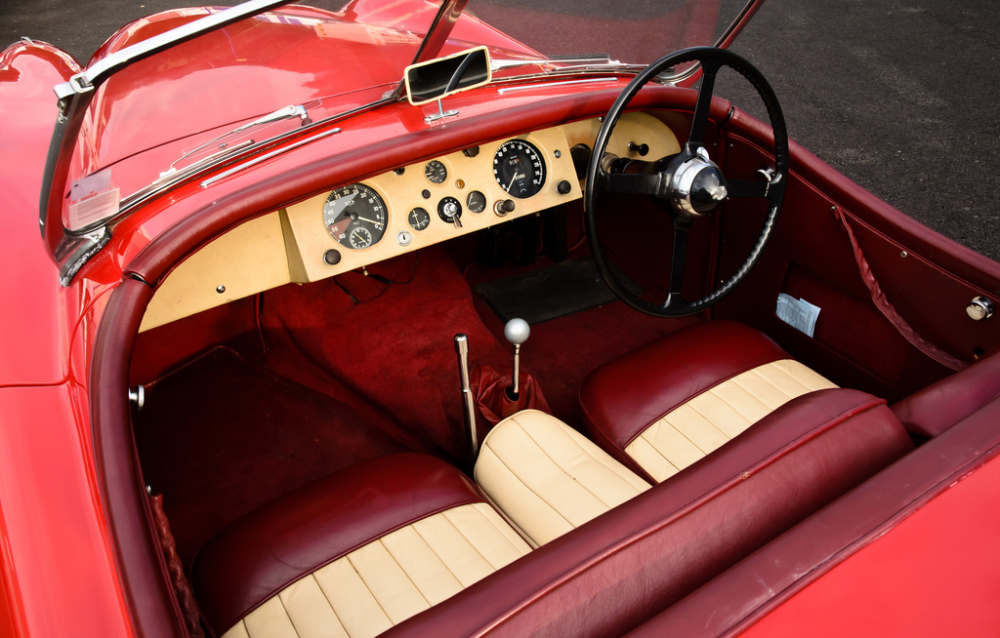
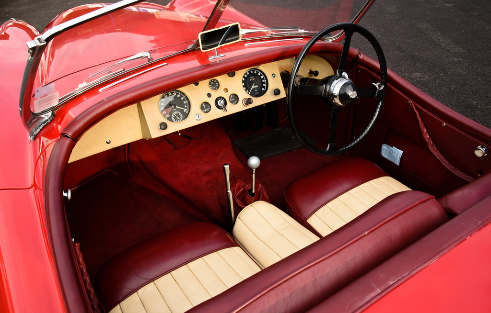

Annonces
Vous recherchez une voiture ancienne ou désirez vendre la votre ? Ecrivez à contact@classicetsportautos.fr ou appelez le +33(0)4.57.93.38.57.
Vente

Jaguar XK 120 Roadster
Prix: 79 900€
Ville: 38400 Saint Martin d'Hères
Année-modèle: 1953
Kilométrage: 28 578 KM

 

{kind=link}
Belle Jaguar XK 120 roadster de 1953, conduite à droite d'origine, de couleur rouge avec de jolis sièges bi-ton.
Quelques modifications discrètes mais apportant plus de confort: ventilateur électrique, embrayage à commnande hydraulique, amortisseurs télescopiques à l'arrière.
Publié le 5 Juillet 2011.

Daimler Sovereign 4,2l
Prix: 6 500€
Ville: 38400 Saint Martin d'Hères
Année-modèle: 1980
Kilométrage: 93 000 KM


Jolie Daimler Sovereign 4,2l de 1980. 93000km au compteur, même propriétaire depuis 1994 ayant acheté la voiture à 48303km.
Nombreux travaux dont moteur refait à 86000km, crémaillère direction à 77600km, pompe à eau à 68200, boite de vitesse à 67400 et peinture à 65000km (1997).
Pneus Michelin XWX bon état.
Publié le 30 Juin 2011.

Mercedes 190 SL VENDUE
Prix: 59 000€
Ville: 38400 Saint Martin d'Hères
Année-modèle: 1961
Kilométrage: 109 567 KM


Mercedes 190SL cabriolet blanche, intérieur cuir rouge, avec hardtop, en très bon état. Belle peinture avec quelques petits défauts. Dessous propre sans corrosion, moteur fiable, très bonne pression d'huile. Bel intérieur en cuir rouge. Capote alpaga comme neuve.
Publié le 8 Mai 2011.
{kind=link}
Multigrade 25w/70
Prix: 7.15€ / litre
{kind=link}
Huile spécifique Multigrade 25w/70 remplaçant les Monogrades SAE40. Cette viscosité est spécialement adaptée pour les moteurs d'après-guerre de forte cylindrées ou pour les moteur possédant une pompe à huile de faible débit, ainsi que pour la majorité des Motos d'après guerre. Cette huile contient des additifs spéciaux qui de par leurs particularités amélioreront la pression à chaud ainsi que la consommation d'huile.
Publié le 4 Mars 2011.

Dynolite Hypoïd 85W/140
Gamme TRANSMISSION
Prix: 7.15€ / litre

Cette huile multigrade remplace la EP90 et dépasse la Norme «GL5». Elle est à utiliser dans la plupart des ponts Hypoïdes d'après 1960.
Publié le 4 Mars 2011.

Dynolite GearOil 40
Gamme TRANSMISSION
Huile de boîte
Multigrade 25w/70
Prix: 7.15€ / litre
{kind=link}
Cette huile multigrade est à utiliser en remplacement des SAE40 et EP90. Elle est compatibles avec les boîtes à taille droite, synchrones et à pignons hypocycloïdes tels que les overdrives. Elles ne contient aucun additif de type «EP» qui détruit les métaux tels que le Bronze le Cuivre et le Laiton. Cette huile ne contient aucun additif d'antifriction moléculaire à effet de surface provoquant le patinage des embrayages d'overdrive et des boîtes à présélection (Cotal, Wilson).
Publié le 4 Mars 2011.
Achat

Triumph TR3
Cherche Triumph TR3 à rénover. Prix maximum: 7000€ Etat épave accepté. Toutes régions.
Evènements
Horaires d'ouverture
- Du Lundi au Vendredi
- de 9h00 à 12h00
- et de 14h00 à 18h30
Adresse
- Classic et Sport Autos
- 20 RUE DU BEAL
- 38400 Saint-martin-d'hères
- Tél : +33 (0)4.57.93.38.57
Téléphone +33 (0)4.57.93.38.57 - Télécopie +33 (0)4.57.93.38.57 - contact@classicetsportautos.fr
Copyright ©2011 Classic & Sport Autos, Tous droits réservés.
Numéro siren : 527 671 515